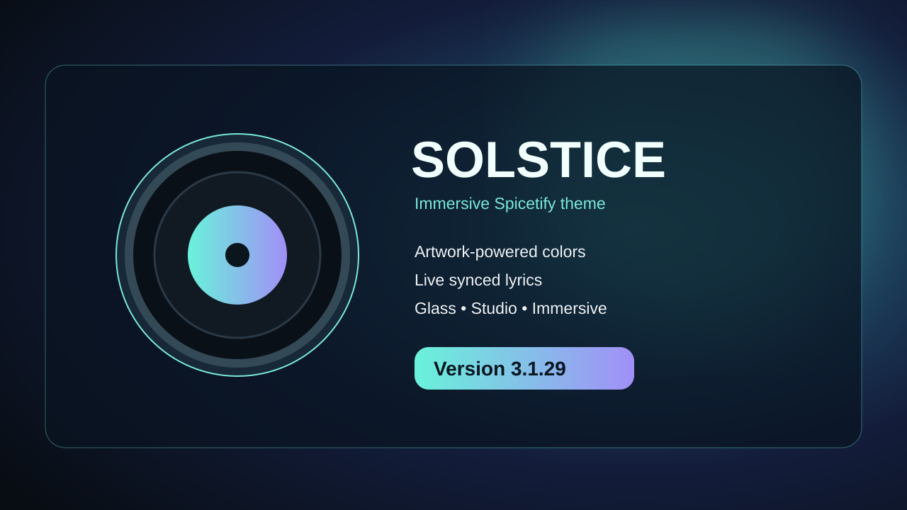

Artwork-matched colors
Gradients and accents shift with the album cover, giving every track its own mood.
A record player you can actually touch. A record that spins, a silver stylus that lands on its grooves, and a responsive stage that fits your screen. Drag to seek, lift the needle and follow the lyrics.

Solstice 3.1.29 brings customizable dynamic lyrics: eight fonts, Flow / Glow / Calm motion, active-line fill, real word timestamps via imported Enhanced LRC, and optional NetEase karaoke timing. The responsive vinyl deck, animated needle, and 33⅓ RPM LP remain.
Gradients and accents shift with the album cover, giving every track its own mood.
Follow along in the sidebar, a floating lyrics pane, or the full immersive player. Edit lyrics directly in Solstice Studio.
Interactive vinyl scrubbing backward and forward, a cueable tonearm, big artwork, karaoke highlights and responsive playback controls.
Adjust glass, blur, ambient light, visualizer, lyrics and motion without editing files.
Grab the spinning record to seek forward or backward. Lift and drop the tonearm to pause or resume your music, with glass, artwork and visualizers all intact.
Check the latest Solstice release, open Marketplace and back up or restore your settings and edited lyrics. No visual features removed.
Open Immersive Mode and put your hands on the music. Rotate the record smoothly to move around the song, use the tonearm as a play/pause switch, or jump around with dedicated controls.
Record movement seeks backward or forward in Spotify; it does not play audio backward or generate DJ scratch sounds.
3.1.29 lyrics update: Pick from eight lyric fonts and three animation styles in Solstice Studio. Import Enhanced LRC for genuine word timing, or enable optional NetEase word-timed lyrics; ordinary line sync is the fallback.
Find Solstice in Marketplace ↗Concept illustration · Interactive controls live inside Spotify
Install directly through Spicetify Marketplace. Solstice 3.1.29 now ships matching JavaScript and CSS as a single versioned package — no Console scripts or manual database changes for new installs.
Install Spicetify and its Marketplace app.
Open Spotify → Marketplace → Themes. Search for Solstice.
Click Install or Apply, and restart Spotify if needed. For an older installation, use Marketplace → Installed → Solstice → Update if available, or refresh its listing. Your Solstice Studio settings and edited lyrics are stored separately.
Solstice Studio now includes eight lyric fonts, adjustable size, and Flow / Glow / Calm animation styles. Enhanced LRC word timing and optional NetEase karaoke are available in Lyrics. Your saved edits and preferences are preserved between releases.
Focus the record, then use ← / → to move 5 seconds, Shift + arrows for 15 seconds, or Home and End to jump to either end of the song.
3.1.29 · Lyrics: choose fonts and motion in Solstice Studio → Lyrics, with optional word-by-word timing.
Solstice is built for the way music feels.
⭐ Star Solstice on GitHub ↗Stars help other listeners discover Solstice. Sign in to GitHub and click Star on the repository.